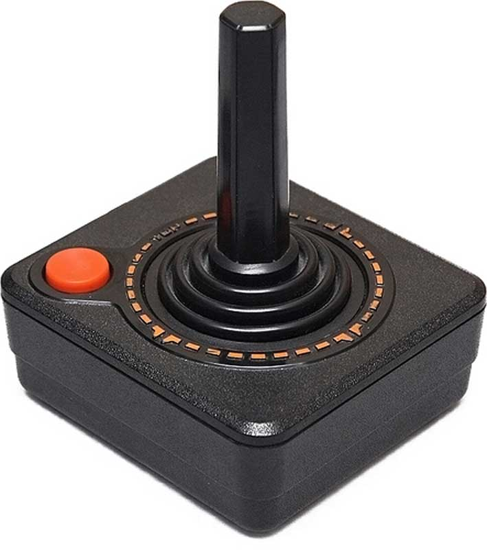
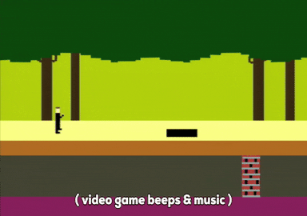

The Console
The Atari 2600 is one of the most influential consoles in the history of video-games, being also one of the most successful ones of all times, with 30 million of unit sold (over 120 millions of game cartridges sold). |
 |
|---|
A bit of History
The Atari Video Computer System (VCS), later called the Atari 2600, is considered the equal console to become globally popular. This console revolutionized the entire gaming industry of the seventies and made videogames a very popular product, the Atari 2600 entered the market on September 11, 1977 (nowadays a not too lucky yearbook) and remained in production until 1992, becoming one of the longest-lived and best-selling consoles in history. Features of the machine are its basic graphics, an elegant and very 70ies-style chassis and the controller with only one joystick, not very comfortable; Atari 2600 was in fact initially designed for very simple games like PONG and Space Invaders, but was finally used for the most disparate gaming concepts.
The Hardware
The Atari 2600 hardware design experienced many revisions during its production history. The main parts were although these:
- CPU: 1.19 MHz MOS Technology 6507
- Audio + Video processor: Television Interface Adaptor
- RAM: 128 bytes (more could be added in the game cartridges)
- ROM(game cartridges): 4kB maximum capacity
- Input: two controller ports, six switches (Power, TV signal etc)
- Output: TV picture and sound signal through RF modulator
The Controller
|  | The stick controller CX40 of the Atari 2600 is known everywhere because of its particular shape, nowadays not really inviting for gamers. This controller allowed input in four directions. An interesting fact is that unlike today's controllers, the Atari 2600 controller was digital, in the sense that pushing the stick in one direction completed a certain circuit, sending an electrical signal to the console. This controller was also designed to rest on a stand and not to be gripped like modern joysticks. With success came new games, and with new games came new controllers: the CX50 Keyboard Controller was introduced in June 1978 and the simpler CX23 controller for kids was released a few later. |
Games Supported
The totality of games supported by Atari 2600 is 526. The Atari VCS was first released in North America on September 11, 1977 with nine cartridges: Air-Sea Battle, Basic Math, Blackjack, Combat, Indy 500, Star Ship, Street Racer, Surround and Video Olympics. Since all the games of this console can't be presented here, some of the most important and significant will be listed:
- Pitfall!
- Missle Command
- Adventure
- Space Invaders
- Battlezone
 |
 |
 |
|---|---|---|
| He is E.T. ... (1982) | The famous Donkey Kong (1981) | PitFall! (1982) |
Impact on the Market and Reception
As said before, this console is a real milestone in Video games history can boast a huge success all over the world. This came after a few years of his introduction on the market; in fact, initially the console sold well but was not very successful because the video game market had not yet exploded. The real success came in 1979 when the console started to record numbers, thanks to the release of conversions of famous arcade games for which Atari had acquired the rights, including Space Invaders, which pushed the sales of the console making it a great commercial success. Between the late seventies and early eighties Atari 2600 dominated the console market allowing Atari to record sales of $5 billion at the end of 1982.
Competition
Atari's new console was presented on September 11, 1977, initially under the name Video Computer System (VCS). Because of this Fairchild changed the name of its ESR in Channel F to avoid ambiguity. During 1982 another console, the ColecoVision by Coleco, made its debut and started a fierce competition. Despite its outdated hardware, Atari 2600 was able to withstand the competition thanks to the hundreds of titles released and the popularity gained in previous years.